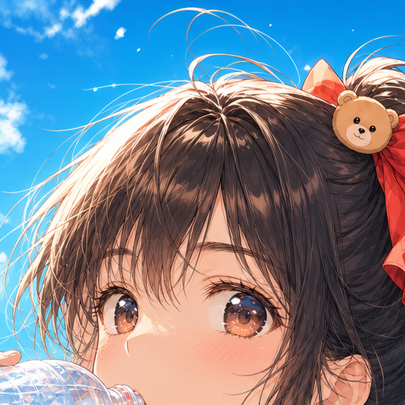
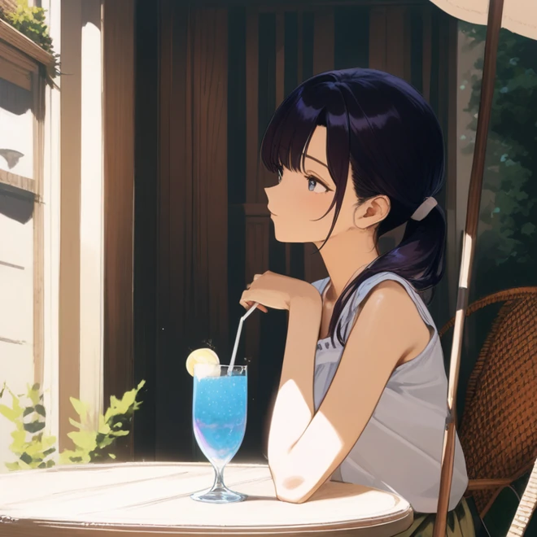
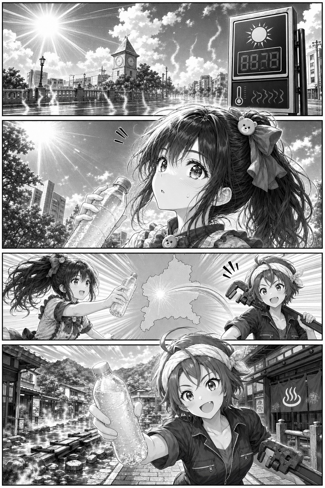
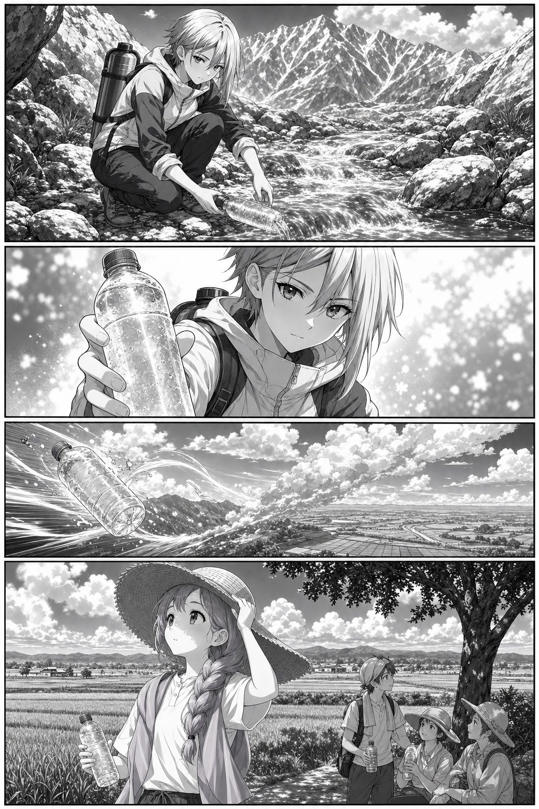
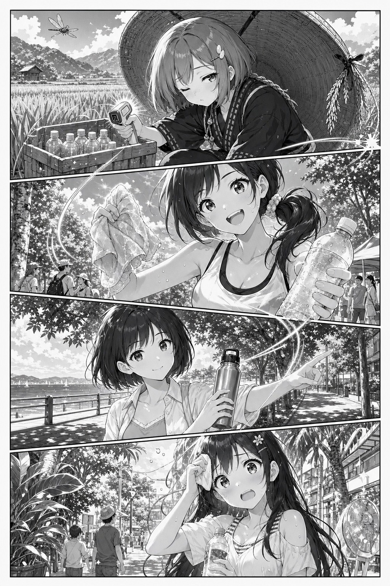
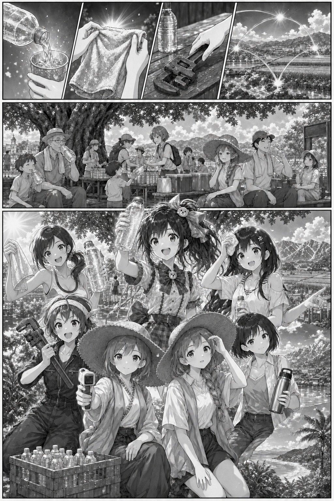
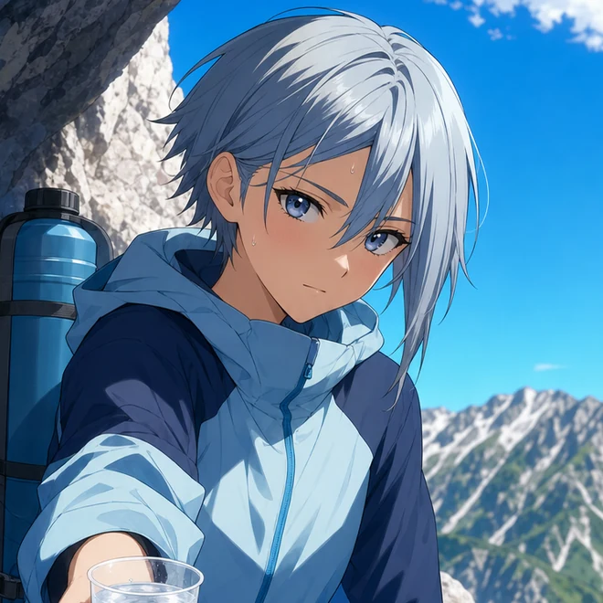
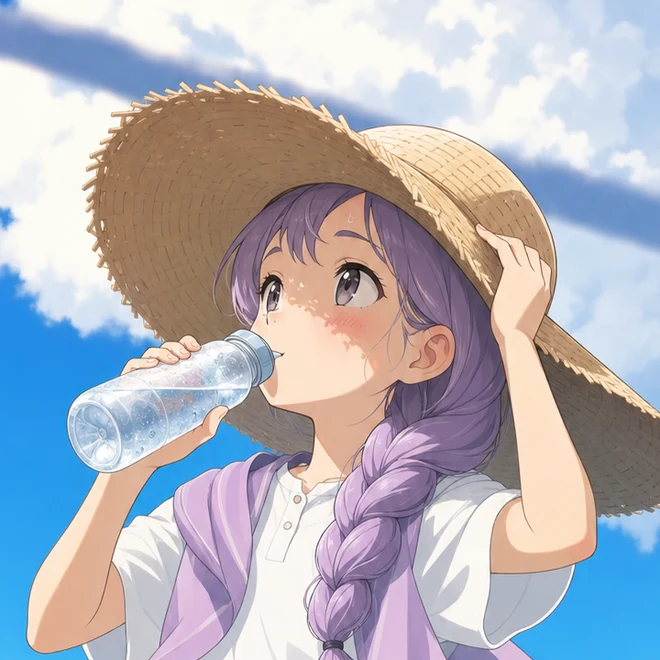
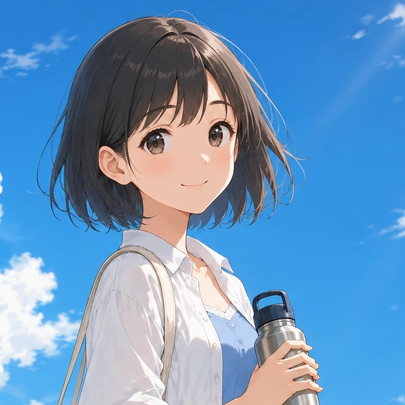

NEW!
第29話
八人、
熊谷に集結
北の冷却タオルから南の湿度レーダーまで、八つの地域の知恵が熊谷へ集まる。勝敗ではなく、誰も取り残さず休める場所を増やすために。
「一人のひと口を、みんなの休憩へつなげよう」現実の最新気温を読む→
創刊号2026 SUMMER¥0
WEB コミックス連載中！（という設定）
最強熊谷伝説 presents
八つの地域をつないで、
ひと口のリレーが始まる。
サイト内限定の4ページ原稿を公開中。
作品・連載・出版社はすべて架空です。


本日の扉絵
8人×8地域×水分補給
暑さと競わない。みんなで、無事に帰る。第1話無料試し読み / 4ページ
暑さは、競わない。
休憩は、つないでいく。
熊谷で上がった気温の警報を合図に、群馬、富山、新潟、秋田、北海道、神奈川、鹿児島の仲間が動き出す。八人それぞれの得意技で、ひと休みの場所を全国へ増やしていく。
NOT A BATTLEWHO IS HOTTER?
気温の上昇を知った水分係が、全国へリレーをつなぐ。

くまがや水分係「全国のみんな、給水リレー、スタート！」
湯煙あつね「湯上がりこそ、まず一杯！」
富山の冷たい一杯を受け、新潟の田園に休憩の合図が届く。

雪解みずは「冷たい一杯で、山道もひと休み。」
雲田みのり「日差しを避けて、先に飲もう。」
水温、冷却タオル、日陰、湿度。違う得意技がひとつの休憩をつくる。

稲守ねむ「ん……水がぬるい。先に休もう。」
銀雪クール係「冷たいタオルで、ひと息つこう。」
涼風ポニーテール「日陰に入って、水を飲もっか。」
南国クールダウン係「日陰で水分、ちゃんと取ろう。」
全国をつないだ給水リレーが、大きな木陰へたどり着く。

くまがや水分係「勝つより、無事に帰ろう。」
八人「次のページへ行く前に、まず一口！」
02 LATEST EPISODE
第29話
北の冷却タオルから南の湿度レーダーまで、八つの地域の知恵が熊谷へ集まる。勝敗ではなく、誰も取り残さず休める場所を増やすために。
「一人のひと口を、みんなの休憩へつなげよう」現実の最新気温を読む→
順位が下がっても、危険は下がらない。
湯煙あつね、温泉街で給水を呼びかける。
みずはとみのり、山と田園をつなぐ。
バックナンバーのあらすじも含め、すべて架空です。
03 COMICS

最強熊谷伝説 AQUA 最強熊谷伝説
AQUA
最強熊谷伝説
AQUA書店・電子ストアでは購入できません。ISBNも発売予定もない、サイト内の架空企画です。
04 ALL-STAR CAST

空模様観察員 / 新潟雲田みのりKUMODA MINORI 水温チェック / 秋田稲守ねむINAMORI NEMU
灼熱の案内役 / 埼玉くまがや水分係KUMAGAYA GUIDE
水温チェック / 秋田稲守ねむINAMORI NEMU
灼熱の案内役 / 埼玉くまがや水分係KUMAGAYA GUIDE
 冷却タオル係 / 北海道銀雪クール係GINSETSU COOL CREW
冷却タオル係 / 北海道銀雪クール係GINSETSU COOL CREW

日陰案内 / 神奈川涼風ポニーテールSUZUKAZE PONYTAIL
南国休憩案内 / 鹿児島南国クールダウン係NANGOKU COOLDOWN
05 READER VOICE?
「バトル漫画かと思ったら全員ちゃんと休む。そこが好き」
架空の読者・埼玉県
「推しが水を飲むので、私も水を飲むようになりました」
架空の読者・東京都
「熊谷が負ける回ほど、現実の暑さが怖い」
架空の読者・群馬県
※コメント・読者・掲載実績はすべて演出上のフィクションです。
BEFORE THE NEXT CHAPTER
気温ランキングは勝敗ではなく、休憩と水分補給のタイミングを知るためのもの。のどが渇く前に飲み、危険な暑さでは涼しい場所へ移動してください。